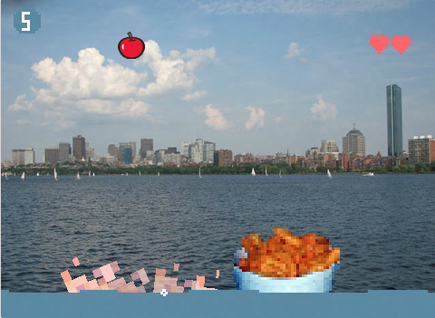
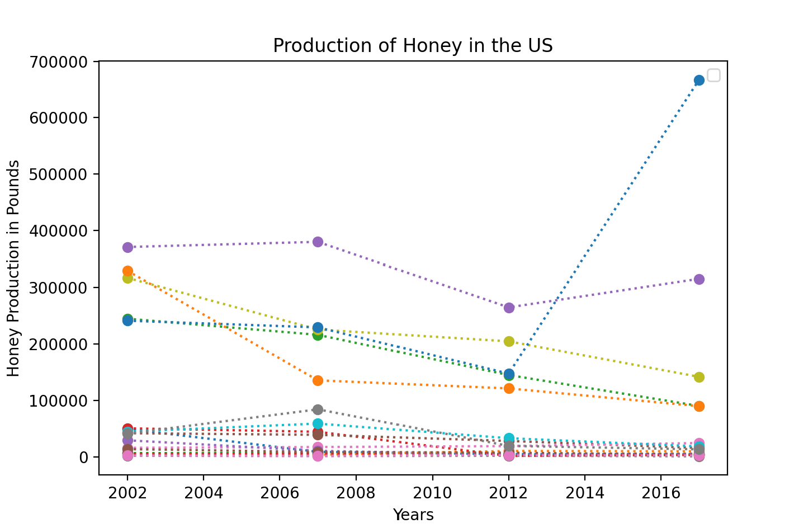
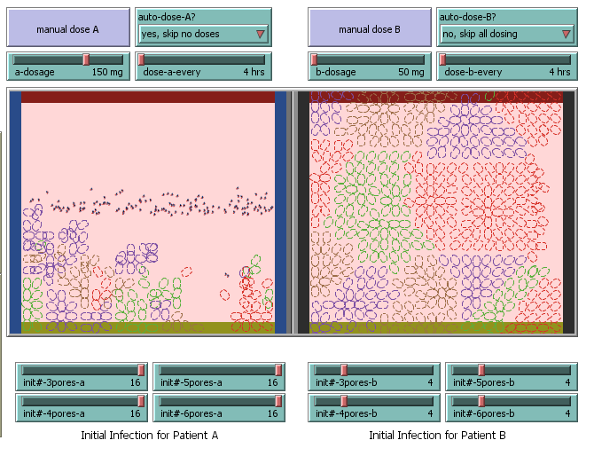
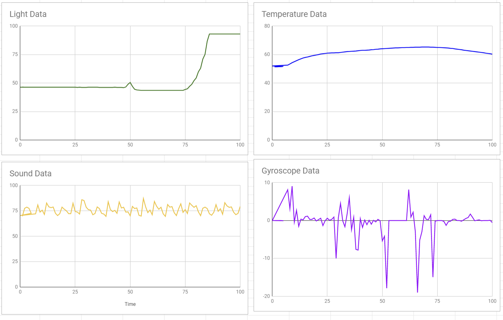

Home
Portfolio
About Me
This is my Portfolio Page!

Project Game #1
This is our Hangman Project that our group did. The code selects words randomly from a preset list with the goal of guessing the correct word before the body of the person is completely drawn. If the player guesses a letter or word incorrectly, then the code draws an additional body part. If the body is completely drawn then the player loses the game.
This is an example of the game being won
Project Game #2
This is a version of Snake that Aiden and I did. This code can randomize the positions of the pawns and obstacles throughout the entire board and will generate randomly each time a pawn is eaten. The image of Hikaru also changes whenever you die or eat a pawn. Once a pawn is eaten, the score counter goes up and the speed of Hikaru will increase by 20% to make it more challenging.

Here is an image of the game once it is started.
Scratch Game
This is a game that my group made on Scratch. It is a Kraken game where you are supposed to avoid the healthy food that falls from the sky and avoid the Kraken that lurks in the water below. There is a score counter and a high score leaderboard on the start screen where you click the "play" button.

Here is an image of the game once it is started.
PLTW 3.2.4 Honey Production Chart
This is a graph of Honey Production over years. We made this for a PLTW section where it depicts 50 states and the amount of Honey each state produced in pounds, over years.

Here is an image of the graph once we executed the code.
PLTW 4.1.4 Simulation Model
This is a simulation of the growth of a Bacteria population over time. This model also considers an antibiotic medication that can be administered into the population to test how well the bacteria can continue to reproduce after a set dosage level.

Here is an image of the model running where the population of bacteria on the left are receiving a dose of medicine and the bacteria population on the right are not receiving any antibiotic at all.
3.1.6. Rover Data Project
Here is an image of 4 graphs depicting the 4 different types of sensors that were used on a Mars Rover. These sensors, including Light, Temperature, Sound, and Gyroscopes, recoreded data that can be used to interpret the location of the Mars Rover.
